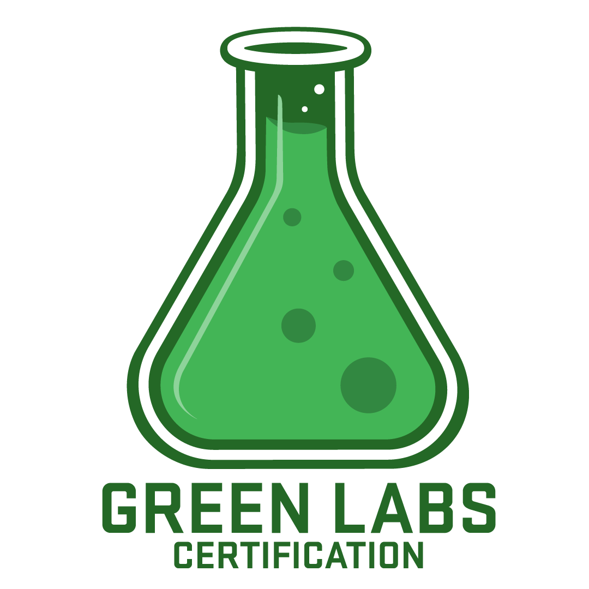

Division of Molecular and Cellular Pathology, Department of Pathology
UAB Heersink School of Medicine
Where to find us
PBMR2, 901 19th St S
Birmingham, AL 35205
Office: Room 504 · Lab: Room 574
Open in Maps
We're always looking for good people.
If you're interested in joining a dynamic and fun team as a graduate student, a postdoc, or an undergraduate volunteer, please get in touch. Have a look at the current projects first.
See what we're working onGreen Lab Certified
A nationally recognised certification for reducing the environmental footprint of research.

The Tyrrell Lab is Green Lab Certified. This nationally-recognized certification demonstrates that our lab has significantly reduced energy, water, waste, and hazardous chemical use, leading to a safer, more sustainable work environment.
We conserve, share, and reuse resources whenever possible, and we are mindful of the impact of our work. Our lab operates as efficiently as possible, and we work closely with the Office of Sustainability, EH&S, and Facilities Management to ensure that it continues to do so into the future. We also promote stewardship of taxpayer support and reduce the environmental impacts of NIH-supported research projects.